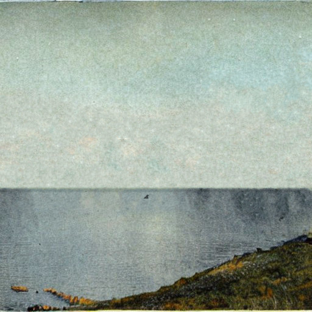

Variswaa.
odd fjords, Variswaa. a place that is commonly associated with mental pain and unknowness, yet the calmest and most relaxing once you've met ma friend, he is just protecting who is protecting him and you blame him?, truly a sicko.
anyways, if you want to be here you should know him first; but before this is him enjoying the water on a enjoyable day
When you enter on odd fjords you will be welcomed with this strange felling of being observed. but don't get out yet, go 20 metres front into the wood house, then knock on the door and i will show you my pet and the felling will go away and you will start felling the truly atmosphere of this place
but this place is not avaiable for you since i transformed my reality on a simulation to bring my pet back from the dead, if you want to access where i am, i developed a windows aplication that make you able to control robot and walk around. i put then in the other tab on the top of this pagead